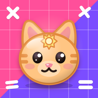

Found a bug, stuck on something, or have an idea? Email {{EMAIL}}. We usually reply within 2 working days. It helps to mention your phone model and the level number.
Fill every square with Sunny (the orange cat) or Luna (the grey cat):
Every puzzle has exactly one answer, so you never need to guess. Tap a square once for Sunny, twice for Luna, and a third time to clear it. Stuck? Tap Hint and Purrzle places the next cat and explains why.
How do I get stars? Solve a level to earn 1 to 3 stars. The faster you solve it, the more stars you get. Spend stars on new themes in the Shop.
Where is my progress saved? On your phone only. There are no accounts, so deleting the app also deletes your levels and stars, and progress does not move between phones.
How do I turn the daily reminder on or off? Open Settings (the gear on the Home screen) and tap Daily reminder.
Why do I see ads? Ads keep Purrzle free. A short ad may play when you move to the next level, and you can choose to watch a video for bonus stars. You never have to watch a video to keep playing.
How do I change my ad privacy choices? On iPhone, go to Settings > Privacy & Security > Tracking. If you are in Europe, the UK or a US state with a privacy law, you can also open Purrzle's Settings and tap Privacy choices.
How do I play the tutorial again? Open Settings, tap How to play, then Play the tutorial.
Read the Purrzle privacy policy.